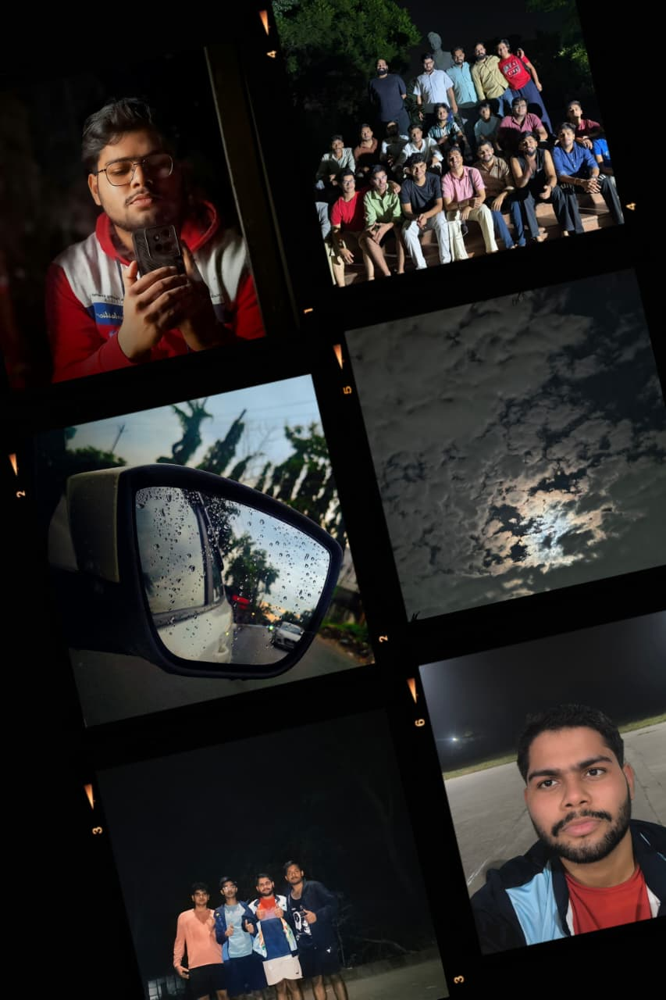

01 • The Big Pivot
From Pure Science to Hajipur–Paris–Bengaluru
Stepping off the pure-science path after 12th to combine analytical thinking with French literature at JNU and digital entrepreneurship at IIM Bangalore.
A former pure-science student who traded equations for French Studies at JNU and Digital Business at IIM Bangalore— grounded by a 6-year classical vocal degree, four instruments, great books, and Formula 1 weekends.


From Hajipur roots to New Delhi campus life ✨
I hail from Hajipur, Bihar—a town rich in warmth, resilience, and cultural heritage—and I am currently based in New Delhi. Up until Class 12th, I was on the traditional Pure Sciences track. While science trained me to think analytically, I realized that I didn't want to spend my life inside a single conventional box—I wanted to explore languages, human stories, music, and digital innovation.
So I made a bold pivot into a creative dual-degree life. Today, I pursue my B.A. (Hons.) in French on campus at Jawaharlal Nehru University (JNU) while simultaneously studying for a BBA in Digital Business & Entrepreneurship from IIM Bangalore.
Long before college, music was my first true discipline. I hold a 6-year degree in Vocal Music from Prayag Sangeet Samiti, trained on the harmonium and tabla, and later taught myself the ukulele and harmonica. When I'm not switching between French phonetics and code, you'll find me reading Dostoevsky by my 40-book shelf, watching football, or cheering (and suffering) with Scuderia Ferrari in Formula 1.
Stepping off the pure-science path after 12th to combine analytical thinking with French literature at JNU and digital entrepreneurship at IIM Bangalore.

From building my own 40-book library starting with Dostoevsky's White Nights to never missing a Formula 1 Grand Prix or a big football night.

A 6-year Vocal Music graduate from Prayag Sangeet Samiti who loves singing ghazals and classics while playing the harmonium, tabla, ukulele, and harmonica.